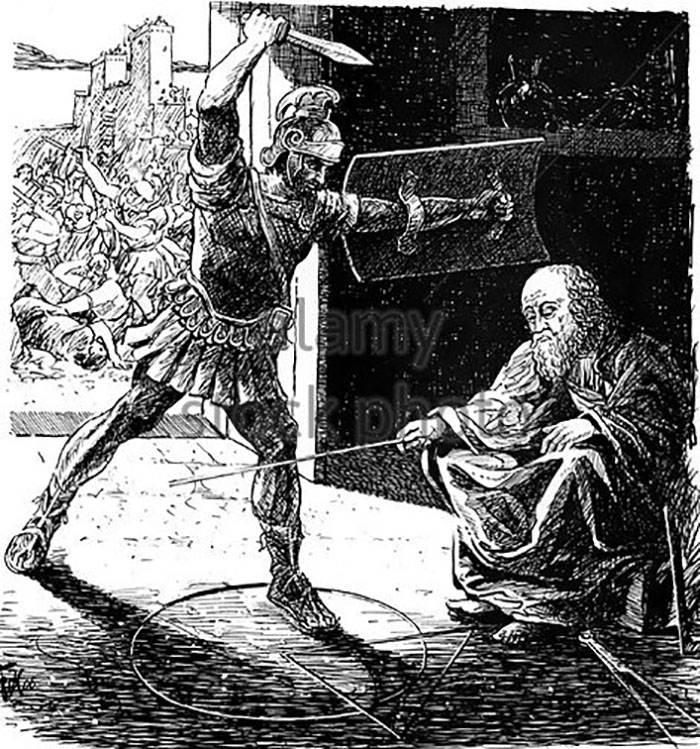

π
Det var Johan Heinrich Lambert som i 1761 viste at tallet π(pi) var irrasjonalt, dvs. at det ikke kan skrives som en brøk, men som et desimaltall med uendelig mange desimaler: 3,14159265358979... Tallet π var imidlertid kjent lenge før 1761, og man hadde allerede regnet ut over 100 riktige desimaler av tallet på den tiden.
Arkimedes var en gresk vitenskapsmann som regnes for en av antikkens viktigste vitenskapspersoner. Hans siste ord skal ha vært "ikke forstyr sirklene mine"
Det har vært kjent i flere tusen år at forholdet mellom omkretsen og diameteren i en sirkel ikke forandres selv om størrelsen på sirkelen forandres. Hvor du finner omkrets og diameter i en sirkel, er du i figuren over. Akkurat som forholdet/tallet "det gylne snitt", se i høyrespalten, er også dette forholdet et spesielt pent forhold/tall. Vi kaller det altså π.